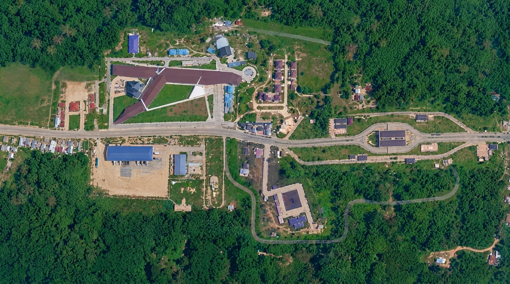
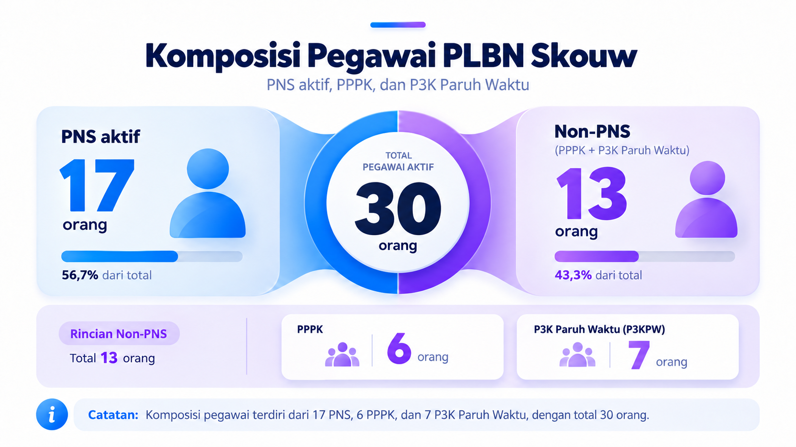
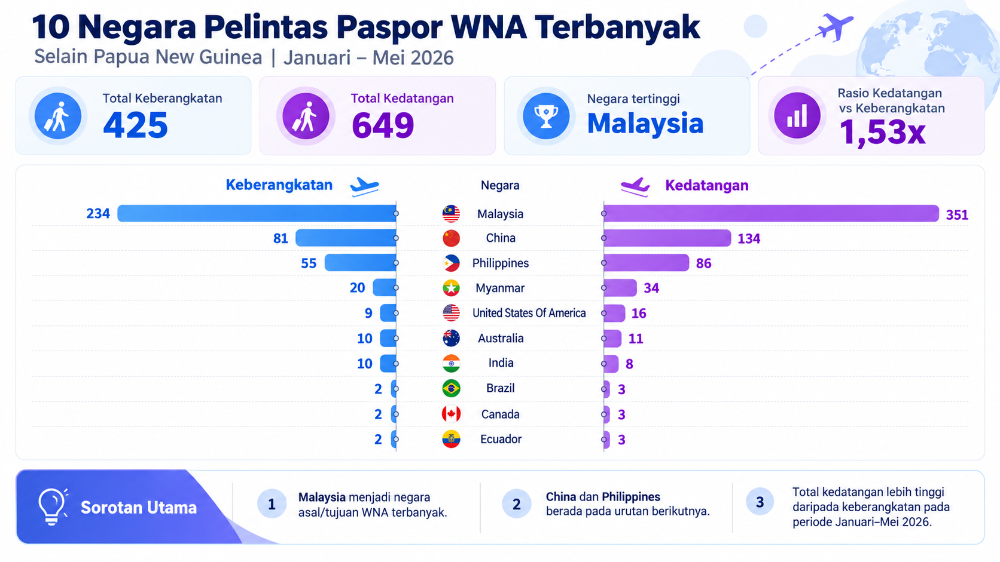
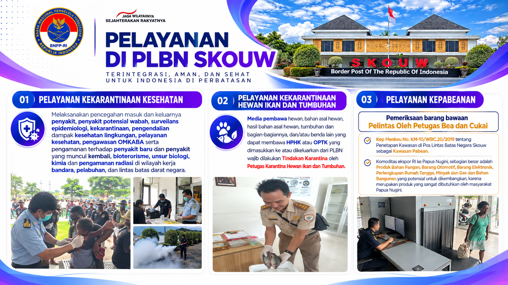
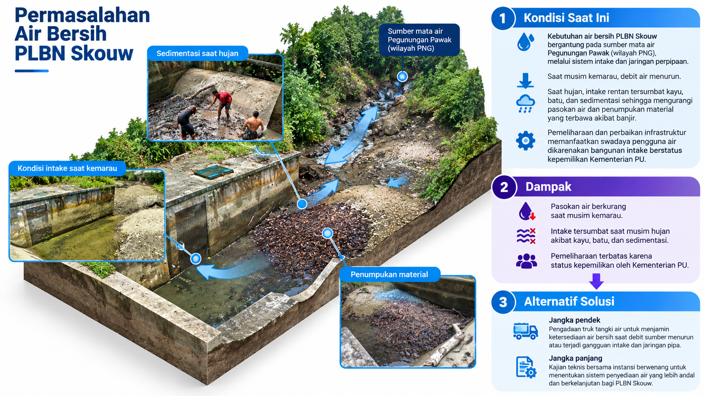
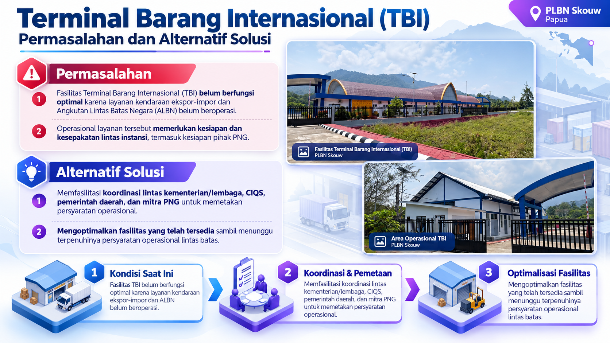
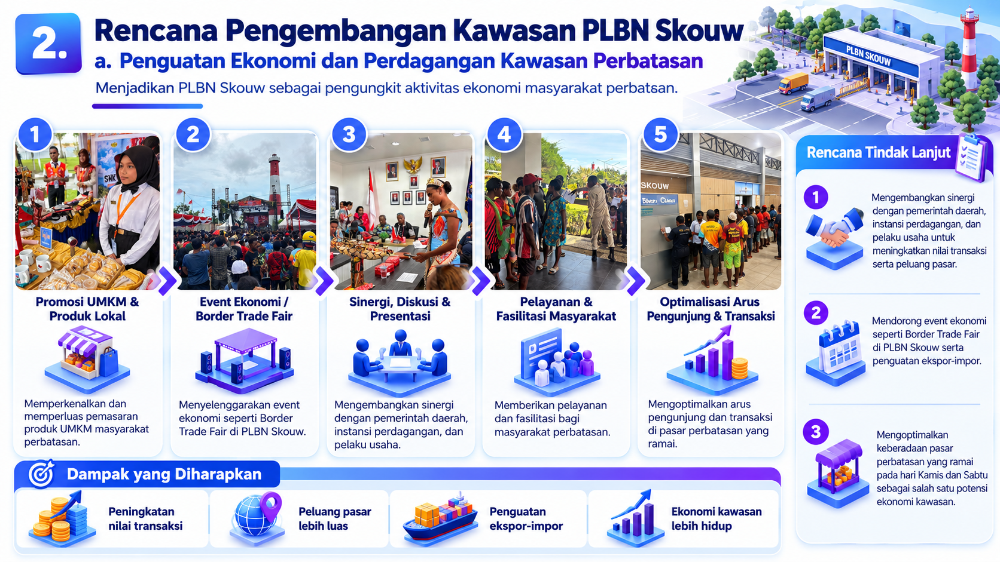
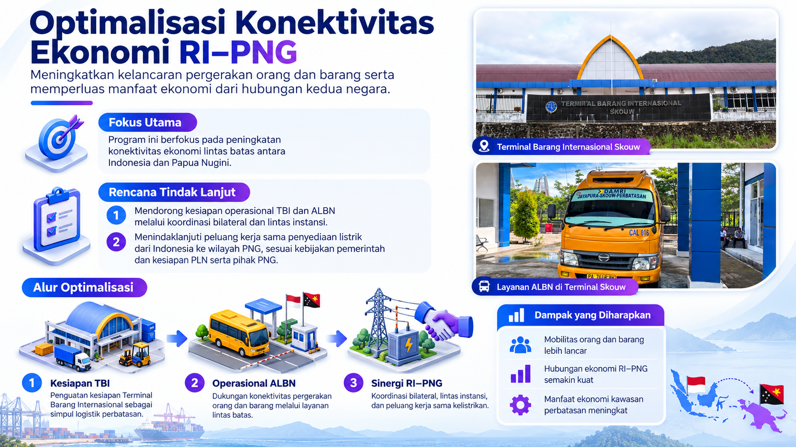
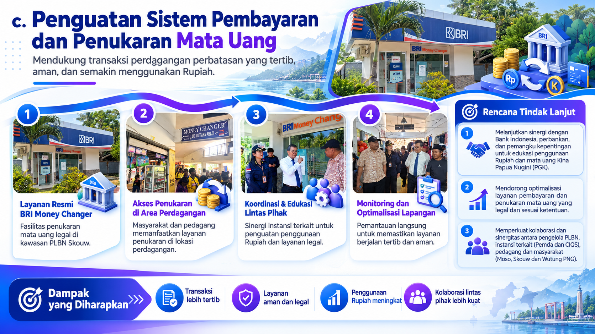
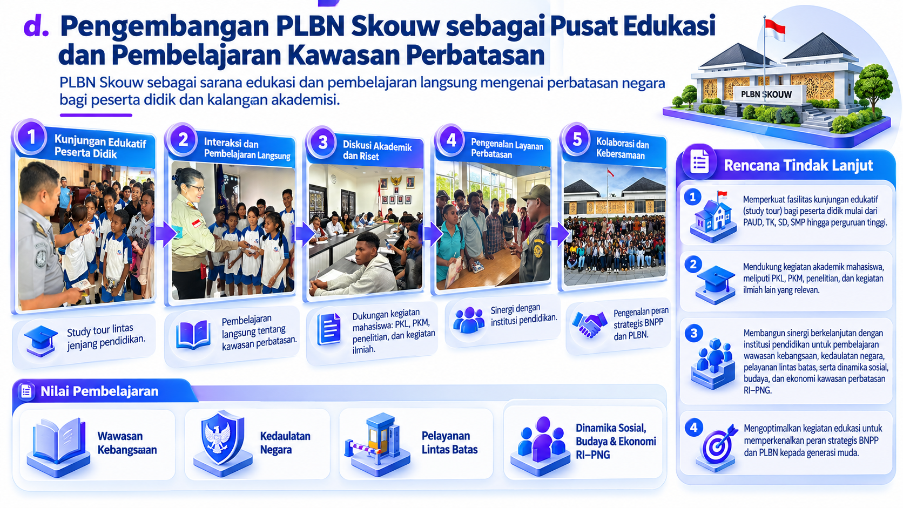

Pos Lintas Batas Negara
SKOUW
Kota Jayapura, Papua
Gerbang pelayanan, pengawasan, dan penghubung antarnegara di ujung timur Indonesia.
Perjalanan dimulai
di ujung timur Indonesia.
Pos Lintas Batas Negara
Kota Jayapura, Papua
Gerbang pelayanan, pengawasan, dan penghubung antarnegara di ujung timur Indonesia.
Indonesia dan Papua Nugini bertemu di gerbang lintas batas ini.
Pengawasan, pemeriksaan, dan pelayanan perlintasan orang dengan dokumen perjalanan atau dokumen lain yang sah dan disepakati kedua negara.
Pengawasan, pemeriksaan, dan pelayanan perlintasan barang untuk perdagangan luar negeri dan/atau perdagangan di kawasan perbatasan.
Pengawasan, pemeriksaan, dan pelayanan perlintasan sarana angkutan barang, angkutan umum, dan/atau angkutan pribadi.
Penyediaan data informasi aktivitas lintas batas negara melalui PLBN.
Scroll untuk memulai ↓

Kawasan PLBN Skouw
Scroll untuk mengenali pembagian zona dan fasilitasnya.
Scroll untuk membuka zonasi ↓
Fasilitas lain: Polsubsektor Skouw Perbatasan RI–PNG, Terminal Barang Internasional RI–PNG, dan Gudang.

Komposisi Pegawai
PNS aktif, PPPK, dan P3K Paruh Waktu.
Scroll untuk menampilkan komposisi pegawai ↓
PNS aktif: 17 orang atau 56,7 persen. Non-PNS: 13 orang atau 43,3 persen. Total pegawai aktif: 30 orang.
Rincian Non-PNS: PPPK 6 orang, P3K Paruh Waktu (P3KPW) 7 orang.
Catatan: Komposisi pegawai terdiri dari 17 PNS, 6 PPPK, dan 7 P3K Paruh Waktu, dengan total 30 orang.

Pelintas dan Perdagangan
Ringkasan Januari 2025 – September 2026.
Scroll untuk membuka data pelintas dan perdagangan ↓
Ekspor: kebutuhan rumah tangga, sparepart, material/bahan konstruksi, dan bahan makanan. Impor: vanili, kulit kayu masohi, minuman ringan, dan makanan ringan/Twisties.

10 negara pelintas terbanyak
Selain Papua New Guinea · Januari–Mei 2026.
Scroll untuk membandingkan pelintas tiap negara ↓
Total keberangkatan 425. Total kedatangan 649. Rasio kedatangan terhadap keberangkatan 1,53 kali.
| Negara | Keberangkatan | Kedatangan |
|---|---|---|
| Malaysia | 234 | 351 |
| China | 81 | 134 |
| Philippines | 55 | 86 |
| Myanmar | 20 | 34 |
| United States Of America | 9 | 16 |
| Australia | 10 | 11 |
| India | 10 | 8 |
| Brazil | 2 | 3 |
| Canada | 2 | 3 |
| Ecuador | 2 | 3 |
Malaysia merupakan negara asal/tujuan WNA terbanyak. China dan Philippines berada pada urutan berikutnya. Total kedatangan lebih tinggi daripada keberangkatan pada periode Januari–Mei 2026.

Pelayanan di PLBN Skouw
Pelayanan terintegrasi, aman, dan sehat untuk Indonesia di perbatasan.
Scroll untuk mengenali pelayanan PLBN Skouw ↓
Pelayanan terintegrasi, aman, dan sehat untuk Indonesia di perbatasan.
Pencegahan penyakit, surveilans epidemiologi, kekarantinaan, pengendalian kesehatan lingkungan, pelayanan kesehatan, serta pengawasan dan pengamanan di wilayah lintas batas negara.
Media pembawa yang dapat membawa HPHK atau OPTK wajib dilakukan tindakan karantina oleh petugas karantina hewan, ikan, dan tumbuhan.
Pemeriksaan barang bawaan pelintas oleh petugas Bea dan Cukai di kawasan pabean PLBN Skouw. Komoditas ekspor mencakup bahan pangan, barang otomotif, elektronik, perlengkapan rumah tangga, minyak dan gas, serta bahan bangunan.

Dokumen perlintasan
Pelintas wajib memiliki dokumen perjalanan yang sah dan masih berlaku: paspor atau Surat Perjalanan Laksana Paspor, termasuk Pas Lintas Batas/PLB.
Scroll untuk mengenali pelayanan PLBN Skouw ↓
Pelintas wajib memiliki dokumen perjalanan yang sah dan masih berlaku: paspor atau Surat Perjalanan Laksana Paspor, termasuk Pas Lintas Batas/PLB.
Dokumen pendukung antara lain TBC dan manifest sesuai peruntukan. Manifest Ruko Market digunakan sampai area pasar, sedangkan TBC Manifest dapat digunakan hingga Kota Jayapura.
Per 22 September 2026, PLBN Skouw menggunakan All Indonesia untuk perlintasan yang menggunakan paspor. Registrasi atau pemindaian QR, verifikasi data di mesin/kiosk, lalu pendampingan dan pemeriksaan petugas.
Mendukung proses perlintasan yang lebih tertib, cepat, dan modern.

Sumber air dan kondisi intake
Pasokan air bersih PLBN Skouw bergantung pada sumber mata air Pegunungan Pawak di wilayah PNG.
Scroll untuk membuka permasalahan dan solusi ↓
Pasokan air bersih PLBN Skouw bergantung pada sumber mata air Pegunungan Pawak di wilayah PNG.
Debit air menurun saat kemarau. Saat hujan, kayu, batu, dan sedimentasi dapat menyumbat intake.
Pasokan air berkurang dan pemeliharaan terbatas karena status kepemilikan intake oleh Kementerian PU.
Jangka pendek: pengadaan truk tangki air. Jangka panjang: kajian teknis bersama instansi berwenang.

Terminal Barang Internasional
Fasilitas TBI dan area operasional PLBN Skouw.
Scroll untuk membuka permasalahan dan solusi ↓
Fasilitas TBI dan area operasional PLBN Skouw.
Fasilitas TBI belum berfungsi optimal karena layanan kendaraan ekspor-impor dan ALBN belum beroperasi. Operasional memerlukan kesiapan dan kesepakatan lintas instansi, termasuk pihak PNG.
Koordinasi lintas kementerian/lembaga, CIQS, pemerintah daerah, dan mitra PNG untuk memetakan persyaratan operasional.
Memanfaatkan fasilitas yang telah tersedia sambil menuju terpenuhinya persyaratan operasional lintas batas.

Penguatan ekonomi perbatasan
Menjadikan PLBN Skouw sebagai pengungkit aktivitas ekonomi masyarakat perbatasan.
Scroll untuk membuka rencana pengembangan ↓
Menjadikan PLBN Skouw sebagai pengungkit aktivitas ekonomi masyarakat perbatasan.
Promosi UMKM dan produk lokal; Border Trade Fair; sinergi dan diskusi; pelayanan masyarakat; optimalisasi pengunjung dan transaksi.
Mengembangkan sinergi pemerintah daerah, instansi perdagangan, dan pelaku usaha; mendorong event ekonomi dan ekspor-impor; mengoptimalkan pasar pada hari Kamis dan Sabtu.
Peningkatan nilai transaksi, peluang pasar lebih luas, penguatan ekspor-impor, dan ekonomi kawasan lebih hidup.

Konektivitas ekonomi RI–PNG
Meningkatkan kelancaran pergerakan orang dan barang serta memperluas manfaat ekonomi dari hubungan kedua negara.
Scroll untuk membuka rencana pengembangan ↓
Meningkatkan kelancaran pergerakan orang dan barang serta memperluas manfaat ekonomi dari hubungan kedua negara.
Mendorong kesiapan operasional TBI dan ALBN melalui koordinasi bilateral dan lintas instansi. Menindaklanjuti peluang kerja sama penyediaan listrik sesuai kebijakan pemerintah dan kesiapan PLN serta pihak PNG.
Kesiapan TBI → operasional ALBN → sinergi RI–PNG.
Mobilitas orang dan barang lebih lancar, hubungan ekonomi RI–PNG semakin kuat, serta manfaat ekonomi kawasan perbatasan meningkat.

Pembayaran dan penukaran mata uang
Mendukung transaksi perdagangan perbatasan yang tertib, aman, dan semakin menggunakan Rupiah.
Scroll untuk membuka rencana pengembangan ↓
Mendukung transaksi perdagangan perbatasan yang tertib, aman, dan semakin menggunakan Rupiah.
Layanan resmi BRI Money Changer; akses penukaran di area perdagangan; koordinasi dan edukasi lintas pihak; monitoring dan optimalisasi lapangan.
Sinergi dengan Bank Indonesia, perbankan, dan pemangku kepentingan untuk edukasi Rupiah dan Kina Papua Nugini; optimalisasi layanan legal; kolaborasi pengelola PLBN, Pemda, CIQS, pedagang, dan masyarakat.
Transaksi lebih tertib, layanan aman dan legal, penggunaan Rupiah meningkat, serta kolaborasi lintas pihak lebih kuat.

Pusat edukasi perbatasan
PLBN Skouw sebagai sarana edukasi dan pembelajaran langsung mengenai perbatasan negara bagi peserta didik dan kalangan akademisi.
Scroll untuk membuka rencana pengembangan ↓
PLBN Skouw sebagai sarana edukasi dan pembelajaran langsung mengenai perbatasan negara bagi peserta didik dan kalangan akademisi.
Kunjungan edukatif, interaksi dan pembelajaran langsung, diskusi akademik dan riset, pengenalan layanan perbatasan, serta kolaborasi dan kebersamaan.
Fasilitasi study tour dari PAUD hingga perguruan tinggi; dukungan PKL, PKM, penelitian dan kegiatan ilmiah; sinergi institusi pendidikan; pengenalan peran strategis BNPP dan PLBN.
Wawasan kebangsaan, kedaulatan negara, pelayanan lintas batas, serta dinamika sosial, budaya, dan ekonomi RI–PNG.
PLBN menjadi tempat pengawasan dan pelayanan lintas batas negara, dengan sarana pemeriksaan keimigrasian, kepabeanan, dan kekarantinaan yang terpadu.
Jalan Raya Negara Skouw Perbatasan No. 01
Kampung Mosso, Distrik Muara Tami
Kota Jayapura, Papua
Dibangun Desember 2015–November 2016.
Diresmikan 9 Mei 2017.
Tempat pengawasan, pemeriksaan, dan pelayanan perlintasan orang dengan dokumen perjalanan atau dokumen lain yang sah dan disepakati kedua negara.
Tempat pengawasan, pemeriksaan, dan pelayanan perlintasan barang untuk perdagangan luar negeri dan/atau perdagangan di kawasan perbatasan.
Tempat pengawasan, pemeriksaan, dan pelayanan perlintasan sarana angkutan barang, angkutan umum, dan/atau angkutan pribadi.
Penyediaan data informasi aktivitas lintas batas negara melalui PLBN.
Sumber pada referensi: Peraturan BNPP Nomor 3 Tahun 2025.